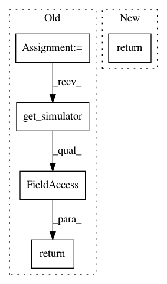

5795af03c5842f6d7c77e29e146cfe960df3bceb,spynnaker/pyNN/models/common/neuron_recorder.py,NeuronRecorder,get_sampling_interval,#NeuronRecorder#Any#,42
Before Change
:param variable: PyNN name of the variable
:return: Sampling interval in micro seconds
return globals_variables.get_simulator().machine_time_step
def get_matrix_data(
self, label, buffer_manager, region, placements, graph_mapper,
application_vertex, variable, n_machine_time_steps):
After Change
:param variable: PyNN name of the variable
:return: Sampling interval in micro seconds
return self._sampling_rates[variable]
def get_matrix_data(
self, label, buffer_manager, region, placements, graph_mapper,
application_vertex, variable, n_machine_time_steps):
In pattern: SUPERPATTERN
Frequency: 3
Non-data size: 5
Instances
Project Name: SpiNNakerManchester/sPyNNaker
Commit Name: 5795af03c5842f6d7c77e29e146cfe960df3bceb
Time: 2017-12-05
Author: christian.brenninkmeijer@manchester.ac.uk
File Name: spynnaker/pyNN/models/common/neuron_recorder.py
Class Name: NeuronRecorder
Method Name: get_sampling_interval
Project Name: SpiNNakerManchester/sPyNNaker
Commit Name: d19ddd7bba3bfac4b763104d5e5d6a06efce1a5a
Time: 2017-12-14
Author: donal.k.fellows@manchester.ac.uk
File Name: spynnaker/pyNN/spynnaker_external_device_plugin_manager.py
Class Name: SpynnakerExternalDevicePluginManager
Method Name: machine_time_step
Project Name: SpiNNakerManchester/sPyNNaker
Commit Name: d19ddd7bba3bfac4b763104d5e5d6a06efce1a5a
Time: 2017-12-14
Author: donal.k.fellows@manchester.ac.uk
File Name: spynnaker/pyNN/spynnaker_external_device_plugin_manager.py
Class Name: SpynnakerExternalDevicePluginManager
Method Name: time_scale_factor